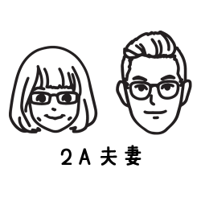

【沖繩】熱門景點連結彙整
精選KKday／Klook【沖繩】景點門票、eSIM、行程、交通卡、機場接送
🌟【沖繩住宿】
HOTEL RESOL TRINITY NAHA
Phoenix Park Hotel
旭橋Yuquesta飯店
Naha Tokyu REI Hotel
🌟【Kkday沖繩網路】
日本eSIM
日本SIM
日本 WiFi
🌟【Kkday沖繩交通】
那霸機場⇔美麗海水族館 往返巴士
桃園機場接送機服務
沖繩包車
沖繩包車旅遊
那霸機場OKA至沖繩全島
沖繩單軌電車一日券
旅館行李配送服務
🌟【Kkday景點套票】
沖繩FunPass美麗海系列
沖繩FunPass超值系列
🌟【Kkday景點門票】
沖繩JUNGLIA
美麗海水族館
沖繩世界王國
DMM水族館
沖繩首里城公園
名護自然動植物公園
🌟【Kkday行程】
Fun Pass沖繩南部一日遊
Fun Pass沖繩北部一日遊
沖繩中北部一日遊
沖繩一日遊
沖繩南部一日遊
沖繩美麗海水族館北部一日遊
青洞浮潛・體驗潛水
美櫻Chura Sakura浴衣＆和服體驗
🌍【Klook交通票】
美麗海水族館高速巴士往返
沖繩島包車自由行
那霸租車
桃園機場接送
沖繩單軌電車一日券
🌍【Klook景點套票】
沖繩美麗海水族館五合一套票
沖繩 FunPASS（超值系列）
沖繩樂享周遊券 1 Week Free Pass
Klook 沖繩景點通票
🌍【Klook景點門票】
美麗海水族館
DMM 水族館
沖繩世界
古宇利海洋塔展望台
沖繩JUNGLIA
沖繩兒童王國門票
名護自然動植物公園門票
🌍【Klook行程】
沖繩觀光巴士南北路線1日遊
觀光巴士之旅
青之洞窟潛水
沖繩玻璃水底觀光船之旅
沖繩北部一日遊
沖繩玻璃水底觀光船之旅
沖繩浴衣＆和服租借